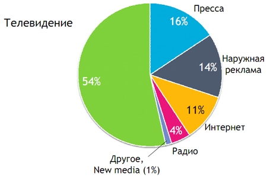
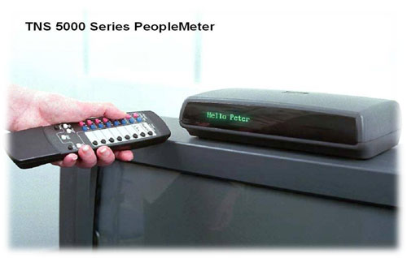
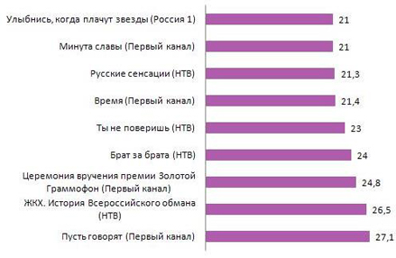

Когда Родион Петрович катил яйца хотел понравиться Кате Тихомировой он рассказывал приезжей девушке о том, в какой замечательной отрасли ему приходится заколачивать советский рубль.
„Не будет ни книг, ни газет, ни театра, ни кино... - Ну, все-таки что-то будет. - Телевидение. Одно сплошное телевидение.“
Несмотря на то, что ни книги, ни газеты, ни театр с кино по прошествии 30 лет никуда не исчезли, слова Родиона Петровича оказались во многим пророческими. Именно телевидение, последние 20 лет в особенности, осваивает основные деньги и окучивает основной электорат.
Сидя на просиженном компьютерном стуле перед окном браузера можно конечно и говорить, что интернет теперь наше всё, а телевидение смотрят одни идиоты. Но, на мой взгляд говорить так еще очень и очень преждевременно.
По данным ассоциации коммуникационных агентств России (АКАР) доля в I полугодии 2010 года 54% рекламных бюджетов приходилось именно на телевидение. На долю интернета (с учётом контекстной рекламы) пришлось только 11% всех рекламных денег. Да и за кого голосовать на всех последних выборах нам тоже говорили из телевизора.

Большие деньги на телевидении крутятся вовсе не зря. Телевидение уже давно не столько средством массовой информации, сколько один из самых ярких примеров шоу-бизнеса. Серьезному бизнесу никак не обойтись без статистики и аналитики.
Как же узнают служители пульта и ЖК-панели о том, что пипл кушает хорошо, а от чего ни роста удоев ни привеса? Как определяется рейтинг телепередач?
Ответ одновременно и прост и сложен. За нами наблюдают. Вернее не за нами, а за репрезентативной панельной выборкой из нас. Для того чтобы понять, что смотрят люди в домохозяйствах некоторых людей устанавливают специальный прибор — пиплметр.

Согласно данным, предоставленным TNS media research, в 2010 году в российских городах с численностью населения более 100 000 человек было установлено в общей сложности 3423 пиплметра. На один отдельный город выходит не так уж и много. Чтобы обеспечить репрезентативнсть выборки исследователи проводят долгую и кропотливую работу по выявлению потенциальных участников. Судя по всему этот человек должен быть самый средний их всех средних людей. «Панельной» такая выборка называется потому, что пиплметры, как правило, устанавливают не на день и не на два. Такая коробочка может стоять у вас дома годами, формируя из вас в том числе своеобразную исселедовательскую панель.
Установленный в квартире пиплметр автоматически идентифицирует и регистрирует каналы, на которые настроен телевизор во время работы, и время, в течение которого осуществлялся просмотр.
Регистрация зрителей осуществляется с помощью блока дистанционного управления (БДУ), на котором расположены кнопки для регистрации членов семьи или гостей, когда телевизор включен. Член семьи или гость, входящий в комнату, где включен телевизор, нажимает закрепленную за ним кнопку, регистрируя свое присутствие. Для регистрации гостя на БДУ имеются специальные кнопки. При регистрации гостя пиплметр запрашивает его пол и возраст. После этого зрители-гости могут пользоваться своей кнопкой точно так же, как и члены семьи. При выходе из комнаты зритель повторно нажимает свою кнопку и тем самым снимает свою регистрацию. При выключении телевизора автоматически снимается регистрация всех зрителей.
Пиплметр автоматически в течение дня записывает все данные о людях и просмотрах в память. Сбор данных с пиплметров выполняется в ночное время с помощью проводной или сотовой телефонной линии. Потом данные проверяют и составляют подобные рейтинги телепередач.

Ссылки по теме: